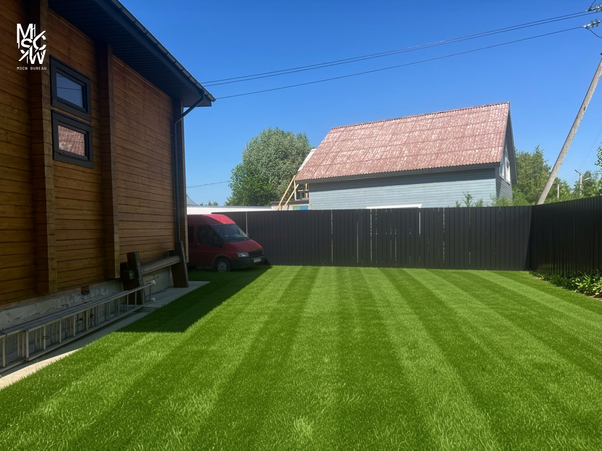
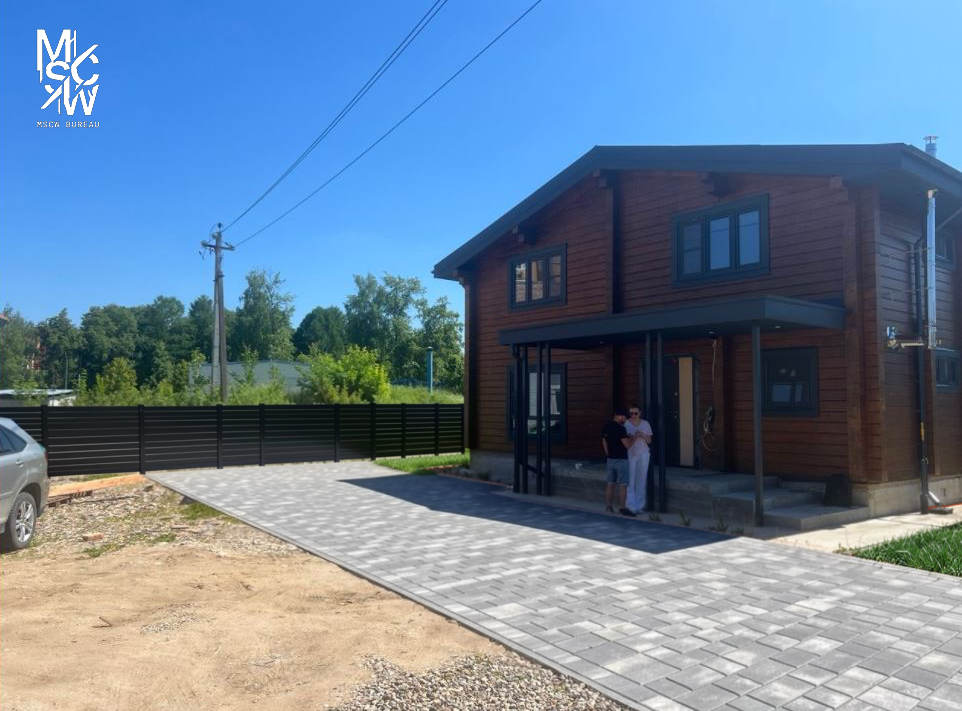
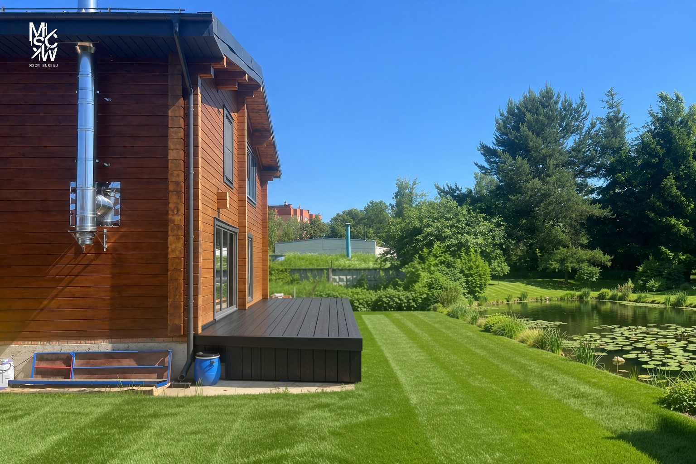
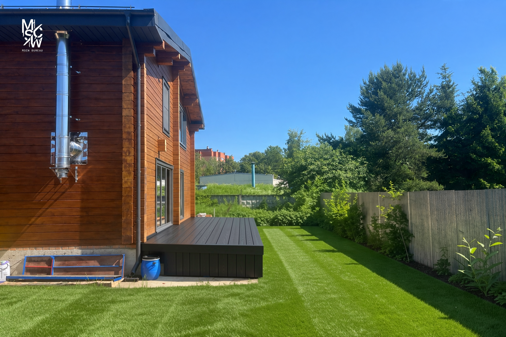

Персональная концептуальная презентация проекта благоустройства вашего участка от MSCW Bureau
НачатьВсе изображения в этом разделе являются исключительно концептуальными визуализациями. Они созданы для того, чтобы помочь вам представить возможный образ вашего участка. Это не финальный рендер ландшафтного проекта. Пропорции, масштаб, растения, материалы и расположение элементов на изображениях носят иллюстративный характер и не отражают точных замеров или окончательных проектных решений.
Добро пожаловать, Надя. Этот сайт — ваш личный путеводитель по процессу создания ландшафтного проекта. Вы — первый владелец дома, поэтому на каждом этапе я буду объяснять, почему то или иное действие необходимо и что оно означает на практике.
Ниже представлены концептуальные изображения, отражающие общее направление и настроение будущего ландшафта.

Концептуальная идея ухоженного газона с чёткими полосами скашивания

Концепция мощения и въездной зоны

Концепция деревянной террасы и природного водоёма

Концепция бокового газона, ограждения и посадок
Для создания точного 3D-макета и проектной документации мне необходимо несколько технических материалов. Ниже — подробный список с пояснениями. Не беспокойтесь, если что-то из этого звучит незнакомо — я всё объясню.
 Пример
Пример
Это технический план вашего участка, созданный профессиональным геодезистом. Он показывает точные границы участка, рельеф местности (перепады высот), расположение существующих строений, деревьев и инженерных коммуникаций.
Зачем это нужно? Это основа всего проекта. Без точного плана участка невозможно правильно разместить дорожки, площадки, посадки и системы полива. Рельеф участка определяет дренаж — куда будет уходить вода после дождя, что критически важно для сада.
 Пример
Пример
План этажей — это чертёж, показывающий внутреннюю планировку вашего дома сверху. На нём видны расположение комнат, дверей, окон и размеры помещений.
Зачем это нужно? Чтобы понять, где находятся выходы из дома, где расположены окна первого этажа и террасы. Это позволяет правильно спроектировать дорожки от дверей, зоны отдыха рядом с террасами и посадки под окнами.

 Примеры
Примеры
Разрез — это вертикальный «срез» дома, позволяющий видеть высоту здания, форму крыши, уровни этажей и отметки фундамента относительно земли.
Зачем это нужно? Для построения точной 3D-модели дома, необходимой для корректных 3D-визуализаций ландшафтного проекта. Разрезы по четырём сторонам дают полную информацию о высотах и форме здания, которые влияют на тени, ветровую защиту и выбор растений.
После предоставления всех необходимых материалов я приступлю к разработке полного ландшафтного проекта. Вот что будет входить в финальный пакет документов:
Подробный план участка с точными измерениями, расположением всех элементов ландшафта, дорожек, посадочных мест и зон отдыха.
Фотореалистичные 3D-рендеры будущего сада с различных ракурсов. Вы увидите ваш участок таким, каким он станет после реализации проекта.
Полный список всех необходимых материалов: тип покрытия, порода и количество растений, элементы освещения, ограждения и малые архитектурные формы.
Подборка альтернативных материалов с учётом вашего бюджета и стиля. Вы сможете выбрать то, что вам нравится больше всего.
Точный расчёт необходимого количества каждого материала — плитки, грунта, щебня, растений и т.д. Это исключает лишние расходы и нехватку материалов.
Ориентировочная стоимость реализации проекта. Это поможет вам планировать бюджет и расставить приоритеты по этапам реализации.